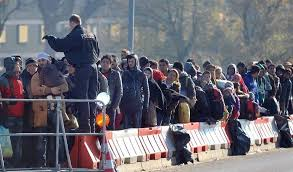

El FMI prevé un impacto económico positivo tras la llegada de refugiados

La masiva llegada de inmigrantes que vive Europa en los últimos meses tendrá, a corto plazo, un positivo impacto económico aunque a largo plazo el impacto dependerá de la rápida integración de los solicitantes de asilo en el mercado laboral. Son las principales conclusiones de un informe del Fondo Monetario Internacional (FMI) sobre el repunte de los refugiados en Europa que su directora gerente ha presentado en el marco del Foro Económico Mundial que se celebra en la estación suiza de Davos.